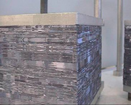
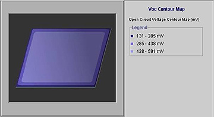

Level 1 - Plasma-Etching of Edges
Most of the phosphorus diffusion processes used commercially will lead to phosphorus diffusing into all surfaces of the wafers including the rear surface and the edges. For good solar cell performance, it is necessary to prevent the photogenerated electrons collected by the front junction from flowing down the phosphorus diffused edges of the wafers to the rear surface where they are effectively lost. It is equivalent to providing a conduction path down the edge of the wafers that links the front and rear metal contacts which, are of opposite polarity. The amount of leakage current in this situation is therefore directly proportional the terminal voltage of the solar cell. When operating at the maximum power point, this terminal voltage is likely to be in the vicinity of 500 mV. Under this bias, if more than a couple of percent of the current is being lost through leakage down these edges, then the edge junction isolation must be improved to reduce this conductivity.
Edge leakage losses of this type are modelled in the solar cell equivalent circuit through the placement of a resistor, known as the shunt resistance, directly across the solar cell diode. Isolating these edge regions will therefore increase the value of this shunt resistor.
|  | The most commonly used approach for isolating or improving these edge regions is to use a plasma to etch away the unwanted phosphorus diffused silicon in these regions. This is normally accomplished by first chemically removing residual native or diffusion oxides and then “coin stacking“ the wafers as shown, in a similar fashion to the way coins are stacked in a pile. The actual design of the plasma system and the chamber dimensions will determine the size limits for such a stack of wafers. The wafers are then clamped together as shown prior to placement in the vacuum chamber of the plasma system. |
High voltages, either AC or DC depending on the type of system, are applied to the two electrodes within the vacuum chamber. In the presence of appropriate gases, electrical discharge results producing a purple glow in the round viewing window as can be seen below. This produces the required reactive ionic species as the gas breaks down through the electrical discharge. In a well designed plasma system, the plasma (discharge) produced will be uniform spatially, although this uniformity will also be somewhat dependent upon electrical power level, gas flows, and the objects placed within the chamber for etching.
| In optimising this part of the process, the key processing parameters are the electrical power delivered to the plasma and the duration for the plasma etching process. If the power is too high, the ionic species produced in the plasma bombard the wafer edges with sufficient energy to cause damage to the electrical properties of the silicon wafers in the edge regions. It is therefore often preferable to etch away the edge phosphorus diffused regions by using a somewhat lower power level but longer duration. On the other hand, there is also a tendency for the plasma to attack the front and rear surfaces of the wafers in the vicinity of the edge by penetration along the cracks existing between adjacent wafers. This damage will be enhanced for longer periods of etching, therefore leading to a trade-off between the power levels and the duration of the etching process. Damage to the edges caused by the high energy ionic species will lead to a small loss in collection of carriers from the edge regions and therefore a slight loss in short circuit current. The biggest effect, however, will normally be to increase the device ideality factor “n“. This is because the removal of the phosphorus diffused layer down the wafer edge exposes the front junction and allows some damage to occur within the depletion region, thereby causing an increase in the junction recombination. This manifests itself as an increase in the device ideality factor. |
Lower powers, however, will lead to slower etch rates, therefore necessitating longer etching periods. If the process fails to remove all the phosphorus diffused silicon, the device shunt resistance “Rsh“ falls. If the shunt resistance is observed to decrease unacceptably, then either the power level for the plasma or the duration of the etching process must be increased. If the duration of the etching process is sufficiently long to allow damage to the front and rear surfaces of the wafers, this will also manifest itself as an increased ideality factor as the damage will inevitably penetrate to some regions of the front junction. If excessive, the latter may also cause a loss in open circuit voltage and also short circuit current as the damaged regions act as highly efficient recombination regions.
An additional constraint while optimising the power and duration for the plasma etching process is the fact that the plasma itself may become unstable and non-uniform if the electrical power level is too low. Such unstable conditions will lead to erratic results and potentially quite poor yields. Depending on the design of the plasma system, such spatial non-uniformity that accompanies unstable plasmas may lead to some of the wafers being etched appropriately while others receive either excessive or inadequate etching. Alternatively, it may be possible for some regions of all the wafer edges to be etched while other regions remain unetched, therefore leading to all wafers having a poor shunt resistance. Measurement of the shunt resistance of solar cells is a very simple and easily performed test and will quickly give insight into such problems.
The Voc contour test is another useful way to evaluate the effectiveness of the edge junction isolation through the plasma etching. With poor edge junction isolation, the voltage measured falls significantly when approaching the edges, indicating a poor shunt resister value in these regions. The contours below show an example, with the Voc falling to below 200mV near the edges. If the plasma etching is effective at removing this shunt, the voltages near the edges in this test will only fall a relatively small amount.
